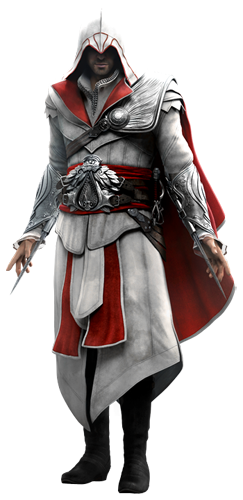

Overview
Assassin's Creed is a historical fiction action-adventure open world stealth video game series that consists of eight main games and a number of supporting materials, as of 2013. The games have appeared on the PlayStation 3, PlayStation 4, Xbox 360, Xbox One, Microsoft Windows, Mac OS X, Nintendo DS, PlayStation Portable, PlayStation Vita, iOS, HP webOS, Android, Nokia Symbian Windows Phone platforms, and the Wii U.
The main games in the franchise were developed by Ubisoft Montreal for the single player and Ubisoft Annecy for the multiplayer, with the handheld titles developed by Gameloft and Gryptonite Studios, with additional development by Ubisoft Montreal. The series has been well received by the public and critics, and has sold over 73 million copies as of April 2014, becoming Ubisoft's best selling franchise. The series took inspiration from the novel Alamut by the Slovenian writer Vladimir Bartol, and are considered by some to be the spiritual successor to the Prince of Persia series.
Gameplay
While the game is presented through protagonist Desmond Miles, the bulk of the game is played as Desmond experiences the memories of his ancestors through an advanced device called the Animus. This provides a means of a diegetic interface, showing Desmond's ancestor's health, equipment, goals, and other features as part of the Animus interface. The Animus is based on the player controlling the assassin to maintain the synchronization between Desmond and his ancestor's memories. Performing actions that go against the Assassin's way or dying breaks the synchronization, effectively requiring the player to restart at a previous checkpoint. Furthermore, the player cannot explore outside areas that the assassin has not experienced yet. There are also abnormalities within the Animus from previous users of the device.
While playing as the Assassin characters, the games are generally presented as third-person in an open world, focusing on stealth and free-running. The games use a mission structure to follow the main story, generally assigning the player to complete an assassination of public figureheads or a covert mission. Alternatively, several side missions are available, such as mapping out the expansive cities from a high perch followed by performing a "leap of faith" into a haystack below, collecting treasures hidden across the cities, exploring ruins for relics, building a brotherhood of assassins to perform other tasks, or funding the rebuilding of a city through purchasing and upgrading of shops and other features. At times, the player is in direct control of Desmond, who by nature of the Animus use has learned Assassin techniques through the bleeding effect, as well as their genetic ability of Eagle Vision, which separates friend, foe and assassination targets by illuminating people in different colors. Through the Animus interface, the player can go back to retry any past mission already completed; for example, in Assassin's Creed: Brotherhood, the player achieves better synchronization results by performing the mission in a specific manner such as by only killing the mission's target.


Ezio Auditore da Firenze
Ezio Auditore da Firenze (1459 – 1524) was a Florentine nobleman during the Renaissance, and, unbeknownst to most historians and philosophers, the Mentor of the Italian Brotherhood of Assassins, a title which he held from 1503 to 1513. He is also an ancestor to William and Desmond Miles, as well as Clay Kaczmarek. After learning of his heritage from his uncle, Mario Auditore, Ezio began his Assassin training and set about on his quest for vengeance against the Templar Order, and their Grand Master, Rodrigo Borgia, who had ordered the execution of his kin.